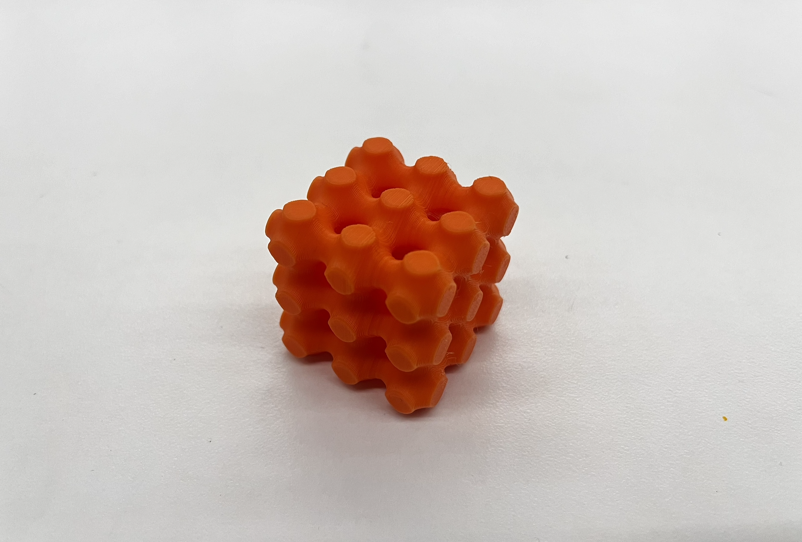
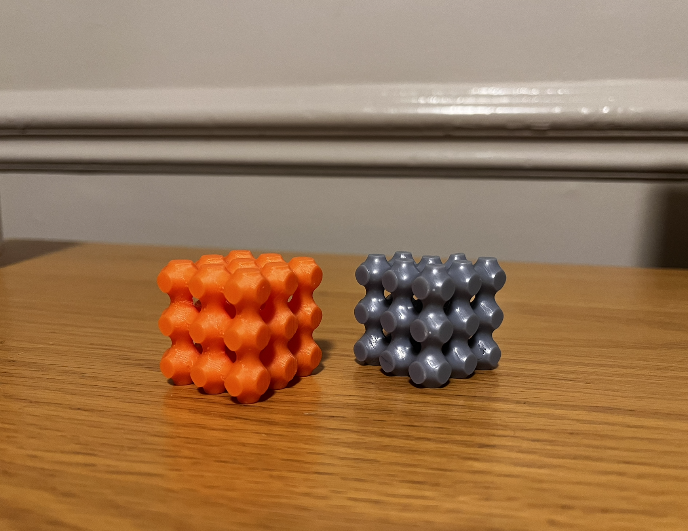
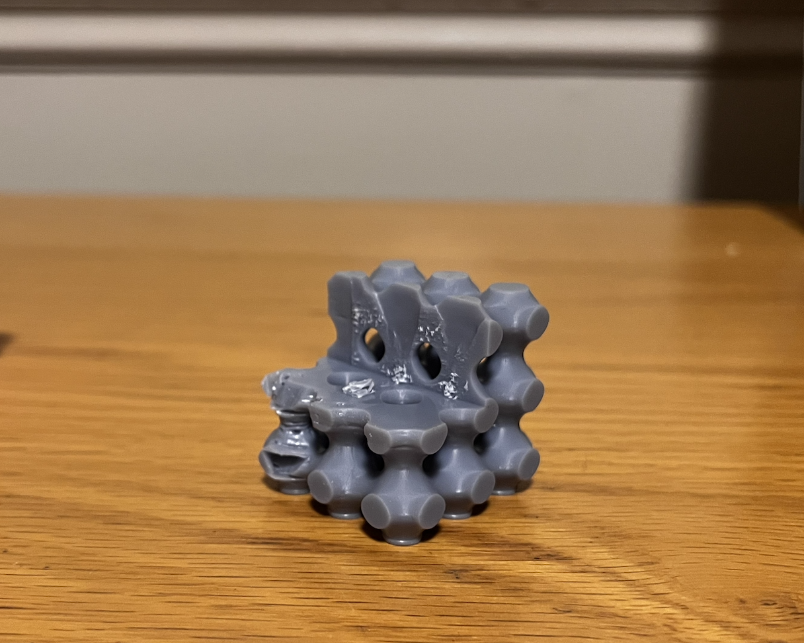

Week 5
3D/Resin Printing
For week 5, we were assigned with 3D printing something that could not be easily made using conventional machine. I also learned the process of setting up and operating the resin printer with Victor.
Lattice Cube Paperweight

This is a screenshot of my CAD 35mm squared cube with the Schwarz P lattice pattern of 12mm in size.
I became very interested in researching and designing objects with lattice patterns because I was facinated with how the structure look very surreal and organic while it is able to hold a very strong structure even without supports during 3D printing.

Completed Lattice Cube Paperweight
PLA Print v. Resin Print

Picture of PLA (left) & Resin (Right) Prints
I learned how to use the resin printer with the help of Victor. During the process, we ran into machine issues and found out there was a small leak at the base of the machine. However, our model was able to be completed. The resin print took 1 hour 42 minutes while the PLA on the MK4s printer took 39 minutes. With the resin print taking significantly longer, the result in the finishing is also stark. From the image, the resin print is slightly smaller than the PLA because 3D prints often have an offset because the print is not perfect.

Erratic Shape Caused by Leak
Photogrammetry Scanning